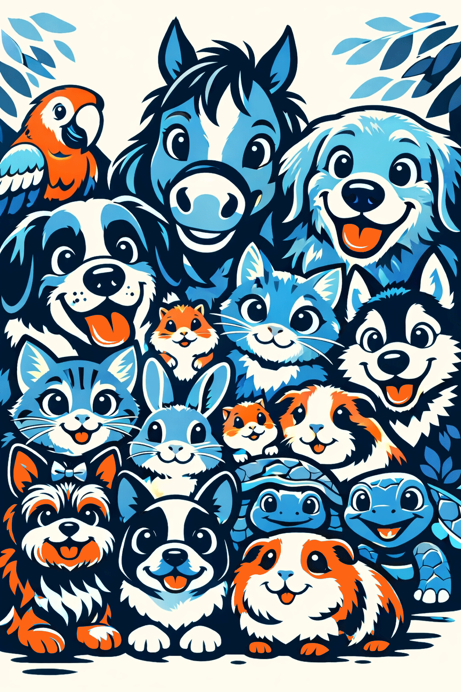

VETTIERIO – kurz für Technik-Interessierte
Wozu es da ist
VETTIERIO ist eine webbasierte Haustier-Gesundheitsakte: Termine, Erinnerungen, Gewicht, Ernährung, Verdauung, Beobachtungen, Symptome, Medikamente, Impfungen, Parasiten, Zyklus, Notizen, Dokumente und ein Gesundheitskalender – alles pro Tier, optional geteilt mit anderen Betreuern. Zielgruppe sind Tierhalter, die den Überblick behalten wollen, ohne Werbung; ein kostenloser und ein Premium-Umfang unterscheiden sich vor allem bei Mehr-Tier-Betrieb, E-Mail-Erinnerungen, PDF-Export, Dokumenten-Upload und Teilen.
Frontend
Single-Page-App mit React 19 und Vite (schneller Dev-Server, produktions-Build nach dist/).
Client-seitiges Routing (React Router): Dashboard, Tierakte, Login, Einstellungen, Marketing-Seite „Für Tierfreunde“ usw.
PWA-tauglich: Service Worker für Web-Push; nutzbar im Browser und als „App zum Startbildschirm“.
UI: eigene Komponenten + CSS (Themes z. B. Standard/Comic), Charts mit Recharts, PDF-Export clientseitig (jsPDF), Dokumentvorschau (PDF.js).
Backend-as-a-Service (BaaS)
Zentrale Plattform: Authentifizierung, NoSQL-Datenbank (Firestore), Datei-Storage, Hosting der statischen App, Cloud Functions (Serverless in europe-west1) und Cloud Messaging für Push.
Datenmodell grob: Nutzerprofile in users, Tiere in pets, Gesundheitseinträge und Erinnerungen in typisierten Collections, Push-Tokens pro Gerät unter users/{uid}/pushTokens. Zugriff über Security Rules (clientseitig nur erlaubte Lese/Schreib-Pfade).
Login & Konto
E-Mail + Passwort (klassische Session über den Auth-Dienst des BaaS).
Passwortlos per Magic Link (Einmal-Link per E-Mail, Fortsetzung auf /login).
Federated Login über OAuth (Google; auf Safari oft Redirect statt Popup).
Passwort zurücksetzen, Konto löschen inkl. Bereinigung von Push-Tokens und geteilten Zugriffen.
Nach Login: Echtzeit-Sync des Profils (Plan Free/Premium) aus Firestore.
Push-Benachrichtigungen
Im Browser: Web-Push über FCM (Firebase Cloud Messaging) + VAPID-Schlüssel; Token wird in Firestore gespeichert.
Versand: zeitgesteuerte Cloud Functions lesen fällige Erinnerungen und senden Data-Push an alle registrierten Geräte des Nutzers (Zeitzone Europe/Berlin, Fensterlogik gegen Doppel-Sends).
Hinweis: iOS/Safari ist bei Web-Push oft eingeschränkt; Android/Desktop zuverlässiger.
E-Mail
Transaktionaler E-Mail-Dienst per HTTP-API (Resend im Backend, API-Key als Secret).
Geplant: Erinnerungs-Mails (Scheduler-Functions), Test- und Diagnose-Endpunkte; Inhalte mehrsprachig aus JSON-Templates.
Premium-Feature: E-Mail-Erinnerungen zusätzlich zu In-App/Push.
Premium & Zahlungen
Zahlungsdienst-Integration (Checkout, Abos, Kundenportal, Webhooks) über serverseitige Functions – Status landet im Nutzerprofil (plan: premium).
Webhook verarbeitet Abo-Events und schaltet Features frei; Rückkehr-URLs hängen an einer konfigurierten APP_URL (Produktions-Domain).
Weitere Technik-Highlights
Tierakte teilen: Einladung per E-Mail, Rechte auf Pet-Dokumente, Profilauflösung per Callable Function.
Dokumente: Upload in Object Storage (BaaS Storage) mit CORS; Metadaten in Firestore.
PDF-Export: größtenteils im Browser generiert (Rubrik-Farben, Tabellen, Charts).
Interner Support-Bereich („Kundendienst“): Lesen von Nutzer-, Abo-, Push- und Speicher-Daten zur Diagnose.
Entwicklung & Betrieb
Versionskontrolle mit git; Build npm run build, Deploy Frontend auf BaaS-Hosting (SPA-Rewrite auf index.html), Functions separat deployen.
Region und Secrets (E-Mail-API, Zahlungs-Webhook, App-URL) sind Teil der Serverless-Konfiguration.
In einem Satz: VETTIERIO ist eine React-SPA auf einem BaaS-Stack (Auth, Firestore, Storage, Functions, Messaging, Hosting), die Tiergesundheit strukturiert speichert und über Web-Push, E-Mail-API und optional Abo-Zahlungen im Alltag unterstützt.

Technologien & Framworks